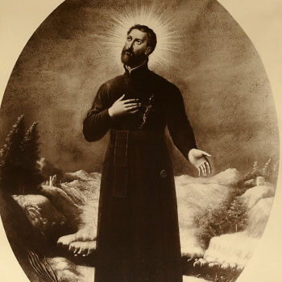

Isusovački blaženici
Svećenik
Bl. Jakov (portugalska varijanta) Carvalho
1578. – 1624.
Portugalski misionar vratio se u Japan nakon izgona, služio progonjenim kršćanskim rudarima te život položio zajedno s vjernicima izloženima mučenju ledenom vodom.
Tekst je preveden i prilagođen uz pomoć umjetne inteligencije.

Izvor slike
- Spomendan
- 22. veljače
- Zaštitništvo
- Nije navedeno u izvoru
- Životni vijek
- 1578. – 1624.
- Djelovanje
- Misije i evangelizacija · Progoni i progonstvo · Mučeništvo
- Razdoblje
- 16., 17. stoljeće
- Podrijetlo
- Coimbra, Portugal
- Svećeničko ređenje
- 1608., Macao
- Rođenje — dostupni podaci
- 1578.; dan i mjesec nisu potvrđeni u provjerenom izvoru.
- Mjesto rođenja
- Coimbra, Portugal
- Datum smrti
- 22.02.1624.
- Mjesto smrti/mučeništva
- Obala rijeke Hirose, Sendai, Japan
- Okolnosti smrti/mučeništva
- Umro od izlaganja ledenoj vodi i hladnoći nakon zatočeništva; odbio odreći se vjere.
- Uloga
- Svećenik
- Mučenik
- Da
- Ostale oznake
- Misionar među kršćanskim rudarima u sjevernom Japanu
- Pripadnost
- Isusovac
- Drugi oblici imena
- Diogo Carvalho · Diogo
Životopis
Diogo Carvalho rođen je oko 1578. u Coimbri u Portugalu. Kao šesnaestogodišnjak pristupio je Družbi Isusovoj. Njegov je misijski put započeo 1600., kada je brodom São João krenuo prema Indiji. Školovanje je nastavio u Goi i Macau, gdje je 1608. primio svećenički red. Sljedeće je godine stigao u Japan, naučio jezik i nekoliko godina slobodno naviještao vjeru.
Uredba o protjerivanju misionara 1614. prekinula je taj rad. S drugim je isusovcima morao otići u Macao. Sveučilišni povijesni dossier bilježi da je početkom 1615. pošao i u Cochinchinu, području današnjega Vijetnama. U Japan se potajno vratio 1616. Završne je zavjete položio 5. kolovoza 1617. u Nagasakiju, nakon duhovnih vježbi u kući Francisca Martinsa. Zatim je otišao na sjever zemlje, surađivao s Jerónimom de Angelisom i 1620. posjetio Hokkaido. Upotrebljavao je i japansko ime Nagasaki Goroyemon.
Služio je osobito rudarima srebra u područjima Ōshūa i Dewe te kršćanima koji su bježali pred progonima s juga. Krajem 1623. opasnost je zahvatila i te zajednice. S vjernicima se sklonio u zabačenu dolinu, ali su ih odali tragovi u snijegu. Predao se kako bi ostali mogli pobjeći; dio je skupine ipak zarobljen. Zatočenici su po hladnoći odvedeni u Sendai, gdje su trpjeli glad i iscrpljenost.
Mučeni su uranjanjem u ledenu vodu uz rijeku Hirose i izlaganjem vjetru, uz obećanje oslobođenja ako se odreknu vjere. Carvalho je umro posljednji, 22. veljače 1624. Imena njegovih suputnika nisu bila dostatno poznata da budu uključeni u njegovu beatifikaciju. Portugalska isusovačka postulatorska stranica ubraja ga među japanske mučenike proglašene blaženima 1867. Njegovo poslanje obuhvatilo je više azijskih zemalja, ali se završno vezalo uz progonjene radničke zajednice japanskoga sjevera.
Život i nasljeđe
Carvalhovo poslanje među rudarima usmjerilo se prema ljudima koji su zbog progona otišli iz poznatijih južnih krajeva. Putovanje na sjever značilo je i drukčije podneblje, radne uvjete i opskrbu. U vrijeme uhićenja snijeg je otkrio tragove zbijega koji se pokušao sakriti u dolini. Takva pojedinost pokazuje koliko je mogućnost skrivanja ovisila o okolišu, a ne samo o ljudskoj spremnosti. Njegovi su suputnici dijelili zatočenje i smrt, ali nisu svi poimence dokumentirani jednako kao on. To ograničava kasniju pojedinačnu rekonstrukciju skupine.
Tekst je preveden i prilagođen uz pomoć umjetne inteligencije.
Pročitaj više na izvornoj stranici ↗